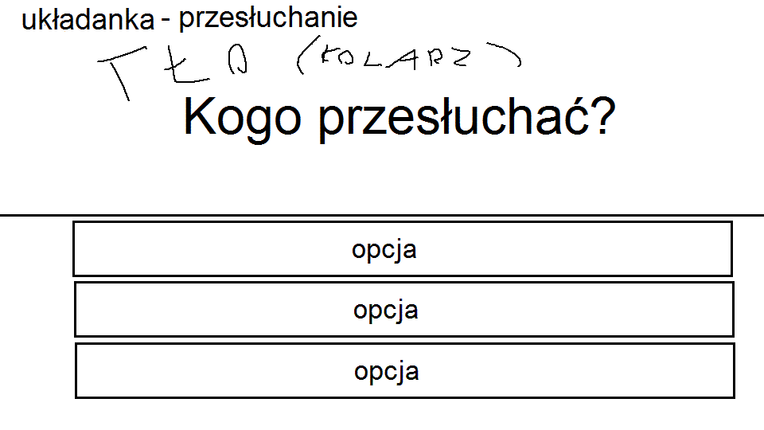

W tym trybie gracz musi odpowiadać na pytania aby ułożyć sobie w głowie przebieg wydarzeń, na podstawie zdobytych dowodów i informacji od świadków.
W większości pytań jest tylko jedna poprawna odpowiedź, ale mogą się pojawiać sytuacje dwuznaczne, gdzie to gracz będzie musiał zdecydować, jakiemu biegowi wypadków wierzy. Wybór ten będzie miał wpływ na zakończenie epizodu oraz na charakter gracza (bezwzględny vs. praworządny).
Gracz zaczyna z X szans. W przypadku udzielenia złej odpowiedzi, traci jedną szansę, a gdy mu się skończą, przegrywa (musi zacząć od nowa).
Czas w jaki gracz zakończy układankę daje dodatkowe punkty które mogą pójść na jakiś leaderboard czy coś.
Gracz musi wybrać jedną z odpowiedzi na zadanie pytanie
Ostatnim pytaniem jest ważna decyzja którego podejrzanego wziąć na przesłuchanie (i próbować dowieść jego winy). Zazwyczaj będzie tylko jedna prawidłowa odpowiedź, a na pewno nie będzie tak, że gdy wybierze się złego podejrzanego to się utknie na etapie przesłuchania.